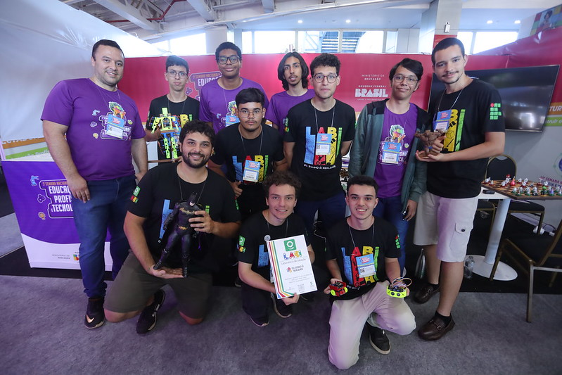

SOBRE
O Laboratório de Ideação (LABI) está situado na Unidade II do campus UPT, sendo um ambiente colaborativo, facilitador de projeção, produção e consolidação de produtos, por meio da formação complementar com as atividades de ensino, pesquisa e extensão oferecidas pelo IFTM-CAUPT., Como sendo um importante espaço para a comunidade e estudantes, que visa promover eventos, minicursos, oficinas e palestras, bem como, o desenvolvimento de projetos com foco na solução de problemas locais.
Para o desenvolvimento de suas ações, o O LABI tem como fundamento, para o desenvolvimento de suas ações, a premissa do “faça você mesmo”. Tal premissa estimula professores (as), estudantes, servidores administrativos e a comunidade externa a resolverem problemas, construindo, consertando, modificando e reaproveitando os mais diversos materiais e objetos para a montagem de protótipos com suas próprias mãos, usando, como auxílio, as ferramentas e equipamentos disponíveis em suas dependências.
EQUIPE
Coordenador:
- Prof. Gustavo Finholdt (gustavofinholdt@iftm.edu.br)
Membros:
- Prof. Helio Aparecido Lima da Silva
- Prof. Júlio César Ferreira
- Prof. Marcelo Pansani Freitas
- Prof. Rafael Godoi Orbolato
- Prof. Robson Borges Rodrigues
- Tec. Natalia Cristina Reis de Moraes
AGENDA
Nenhum evento
PROJETO
- Pintura
- Eletrônica
- Modelagem
- Programação
CONTATO
